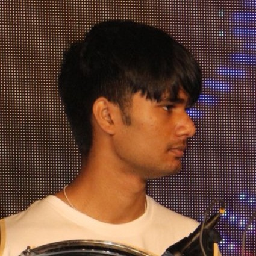

About Me

Hey, I'm Arjun Dingankar, a first-year student at IIIT Hyderabad, diving into the fascinating world of Computational Natural Sciences. I'm passionate about blending science and tech to solve real-world problems. When I'm not coding or studying, you’ll likely find me on the football field, channeling my energy into every kick and sprint. Music is my escape—I play the drums with a rhythm that keeps me grounded. I also love getting lost in a good book or hitting the track for a run, chasing both ideas and endorphins. As part of The Music Club at IIITH, I help bring events to life, merging my love for creativity and teamwork. Excited to share my journey with you!
Photos from My Birthplace
Education Background
- International Institute of Information Technology Hyderabad (IIITH)
B.Tech + M.S. in Computational Natural Sciences, July 2024 - July 2029 - HFS Thane
High School, June 2022 - March 2024 - Euroschool, Thane
School, June 2012 - June 2022
Technical Skills
C
Java
C++